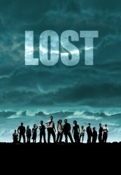

")
 
 IMDB-Wertung: 8.4 / 10
IMDB-Wertung: 8.4 / 10  Metascore:
Metascore: 
Im Bruchteil einer Sekunde gerät das Leben einer Gruppe Reisender aus den Fugen: Ein Flugzeug stürzt auf einer scheinbar einsamen Insel im Pazifik ab - weitab vom Kurs. Nur 48 der Insassen überleben das Inferno. Ihre Hoffnung auf Rettung erweist sich schnell als Illusion und die Überlebenden lernen, sich in der Wildnis zurechtzufinden. Jeder von ihnen hat etwas zu verbergen, jeder eine dunkle Vergangenheit, die langsam ans Tageslicht gelangt. Doch jeder entwickelt auch ungeahnte Stärken, mit denen er den Herausforderungen, dieüberall lauern, begegnen kann. Denn die gefährlichsten Geheimnisse birgt die Insel selbst.
Jahr: 2004
Dauer: 42 Minuten
FSK: 16
Land: USA Studio: ABCTonspuren: DTS - ,
Untertitel: Deutsch,
Auflösung: 720p (1280x720) Größe: 128000 MB
Genre: Thriller, Drama, Sci-Fi, Abenteuer, Fantasy, Mystery, TV-Serie
Regisseur: Jack Bender, Stephen Williams, Paul A. Edwards, Tucker Gates, Eric Laneuville,  Greg Yaitanes, Bobby Roth, Kevin Hooks, J.J. Abrams, Daniel Attias, Rod Holcomb, Karen Gaviola, Stephen Semel, Marita Grabiak, Michael Zinberg, Adam Davidson, David Grossman, Robert Mandel, Alan Taylor, Matt Earl Beesley,
Greg Yaitanes, Bobby Roth, Kevin Hooks, J.J. Abrams, Daniel Attias, Rod Holcomb, Karen Gaviola, Stephen Semel, Marita Grabiak, Michael Zinberg, Adam Davidson, David Grossman, Robert Mandel, Alan Taylor, Matt Earl Beesley,  Roxann Dawson, Deran Sarafian, Paris Barclay, Fred Toye, Mark Goldman,
Roxann Dawson, Deran Sarafian, Paris Barclay, Fred Toye, Mark Goldman,  Mario Van Peebles
Mario Van Peebles
Drehbuch: Akimi Yoshida
Soundtrack:
Darsteller:
 Evangeline Lilly als Katherine 'Kate' Austen
Evangeline Lilly als Katherine 'Kate' Austen Matthew Fox als Dr. Jack Shephard
Matthew Fox als Dr. Jack Shephard Emilie de Ravin als Claire Littleton
Emilie de Ravin als Claire Littleton Harold Perrineau als Michael Dawson
Harold Perrineau als Michael Dawson Elizabeth Mitchell als Dr. Juliet Burke
Elizabeth Mitchell als Dr. Juliet Burke Ken Leung als Miles Straume
Ken Leung als Miles Straume Nestor Carbonell als Richard Alpert
Nestor Carbonell als Richard Alpert Maggie Grace als Shannon Rutherford
Maggie Grace als Shannon Rutherford Michelle Rodriguez als Ana Lucia Cortez
Michelle Rodriguez als Ana Lucia Cortez L. Scott Caldwell als Rose Nadler
L. Scott Caldwell als Rose Nadler Rebecca Mader als Dr. Charlotte Staples Lewis
Rebecca Mader als Dr. Charlotte Staples Lewis François Chau als Dr. Pierre Chang
François Chau als Dr. Pierre Chang Kiele Sanchez als Nikki Fernandez
Kiele Sanchez als Nikki Fernandez William Mapother als Dr. Ethan Rom
William Mapother als Dr. Ethan Rom Kevin Durand als Martin Keamy
Kevin Durand als Martin Keamy Fredric Lehne als Marshal Edward Mars
Fredric Lehne als Marshal Edward Mars Patrick Fischler als Phil
Patrick Fischler als Phil Andrew Divoff als Mikhail Bakunin
Andrew Divoff als Mikhail BakuninDatei: X:\HD-Serien\Lost\S01\Lost S01E01 Gestrandet Teil 1.mkv seit 07.03.2017
Festplatte: HD Serien(I-ST)
 Es gibt insgesamt 182 Filme in der Gruppe 'HD-Serien'
Es gibt insgesamt 182 Filme in der Gruppe 'HD-Serien'